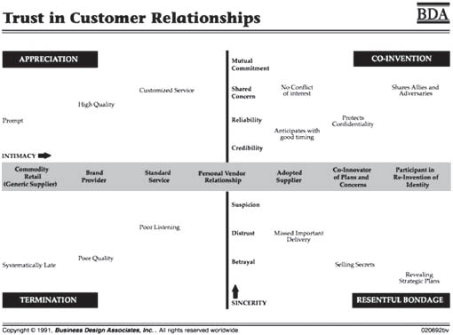

Effective coordination is essential for any company’s success. Poor coordination jeopardizes important business commitments both inside and outside the enterprise. It’s a form of friction, a kind of “sand in the gears” that produces delays, distrust, and waste throughout the enterprise. In today’s environment, when responsiveness to customers and the market is critical, companies can no longer afford to tolerate this waste. Savvy business executives look for ways to improve coordination to ensure that people, teams, and entire departments are in synch, working together to produce value for customers and shareholders.
To date, the most substantial work on coordinating people and processes has evolved from industrial engineering and information technology traditions. This work concentrated on improving material, paper, and data flows and on giving people quicker access to information. Designers have made great advances in organizing work and in getting material and information to the right people at the right time. But there are issues of coordination more fundamental that haven’t benefited from the same rigorous treatment until recently. These issues are about coordinating people rather than things or information flows, and about building coherence between people’s interpretations, intentions, commitments, and relationships. This is the historically thorny “soft” side of management, involving questions like:
Why are we performing these tasks and activities in the first place?
How do we distinguish work that creates value for the customer from work that’s simply bureaucratic waste?
How do we stress teamwork and give people more autonomy, yet still be clear on who’s accountable for what?
How do we ensure that everyone has the same understanding of the context and purpose of the work and their role in it, so that people act in unison?
How do we build stronger, trusting relationships internally as well as with customers?
Even in companies that have reengineered material flows and information processes, there’s a form of miscoordination and waste that remains widespread. We’ll detail some of the fundamental distinctions of a discipline to uncover this waste, and describe how to design effectively in these areas of management.
The Cycle of Miscoordination and Distrust: An Example
Consider this short story: On Monday morning, one of the company’s executives asks a sales manager for a meeting to discuss the progress of a recently initiated marketing project, which is directed at making the sales team more customer-oriented. They schedule a meeting for 10 a.m. on Wednesday. To prepare for that meeting, the manager decides that he needs an update on the project’s development. That morning, he asks three senior marketing representatives, John, Sue, and Kirk, for a report that includes assessments on the performance of the entire sales team, statistics on the number of new customers generated, and a list of recurrent customer complaints. He tells them he needs the report by the end of the day on Tuesday, but doesn’t tell them why he needs it. The three sales reps agree to do the report.
Pressed with other responsibilities, each of the senior sales reps puts off working on the report until the next day. On Tuesday, however, each is as busy as the day before. John prepares his assessment on the sales team’s performance but doesn’t bother with the statistics on new customers or the list of current customer complaints; Sue and Kirk, he thinks, are more familiar with those areas anyway. In the meantime, Sue and Kirk each prepares his or her assessment on performance and draws up a list of customer complaints, but neither prepares statistical information. At the end of the day when the three come together to exchange reports, they realize that no one prepared the statistical information their manager specifically requested. They decide to tell him that they’ll have it first thing Wednesday morning.
Once in the manager’s office, though, the manager explains to them that the statistical information will be useless to him if he doesn’t have it until the morning, because he won’t have time to look it over before the meeting with his boss, and this was the reason he’d asked for it in the first place. Further, after briefly skimming the reports, the manager notices that the assessments aren’t consistent; in fact, in some instances, they’re contradictory. With some disappointment and more than a little frustration, he tells the reps that what they’ve submitted does nothing to help him prepare for tomorrow’s meeting. Frantically, he calls the executive to postpone the meeting, but he’s already left for the day. He turns to the three sales reps and asks them to stay late to help him prepare for the meeting. Even though each had previous plans for the evening, they agree. After making a few phone calls to cancel their engagements, the four spend the next several hours preparing the manager for the next day’s meeting.
We could cite several reasons that lead to that unfortunate conclusion, but what it comes down to is the manager and his subordinates’ poor coordination of commitments. The marketing representatives could’ve clarified which of them would be responsible for various aspects of the report. The manager could’ve informed them why he needed the report, so they’d have been able to treat his request with the appropriate urgency and would’ve understood the kind of detail required. The manager also could’ve avoided a last-minute emergency if he’d checked the senior marketing reps’ availability before committing to a specific time to meet with the executive.
This kind of poor coordination creates a lot of waste: work needs to be redone, redundant tasks are generated in different teams, important commitments “fall through the cracks” because everyone assumes someone else will do it. In the long run, miscoordination leads to poor customer satisfaction, longer response times, and missed opportunities. It has a ripple effect, endangering commitments and spreading waste beyond the immediate situation, too. For instance, while the senior reps in our example finally agreed to assist the manager, they could do so only at the expense of other commitments. Some other work no doubt had to be put off, with consequences for other internal or external customers. Outside of the workplace, the friends and family of all concerned are affected as well.
Miscoordination also has a more lasting and more damaging effect: it erodes the trust that’s fundamental to relationships. If the manager’s experience in the example above is repeated, he may lose confidence in his supporting team. For their part, the team may begin to resent the manager due to the extra work and the disruption in their personal lives. This can become a vicious cycle in which distrust and lack of open, clear communication leads to more miscoordination, and then to deeper distrust. Ultimately, this can result in an organization that is, in a sense, built around distrust. The company becomes full of rigid controls, checks, and procedures that attempt to force people to act responsibly, but which actually create further walls between people and bring effective action to a grinding halt.
Commitment and Language
How can people effectively intervene in this cycle of miscoordination and distrust and begin to reverse it? Let’s look at the critical role of language. We often deemphasize the role of language in our lives and in our work. We’ve all heard “talk is cheap” and “it’s easier said than done.” But this common perception of language hides an important fact: language is our primary means for coordinating our activities. When you think about it, others in your firm only know what you’re currently working on when you or someone else speaks to them about it. Language plays a crucial role in any shared enterprise and is essential for pursuing cooperative activities effectively.
When we speak, we’re not just describing or talking about possible actions, we’re acting: we’re making things happen. This may seem like a trivial point, but it’s important to understanding the central role language plays in action. When we speak, we make commitments to ourselves and to our listeners. These commitments create certain possibilities for action while simultaneously closing off others.
For example, suppose that a businesswoman needs a ride to the airport early the next morning. She asks her friend to drop her off; he agrees. Since the businesswoman asked her friend to take her to the airport and her friend agreed, each will act differently in the future. By agreeing, the friend will now spend the next morning preparing and taking the businesswoman to the airport. Other possibilities that might’ve been open to him are closed off: he can’t sleep in, he can’t have a leisurely breakfast at a cafe, he can’t do other things that he might’ve previously planned to do. Similarly, the businesswoman will also act differently. Now she doesn’t have to worry about getting to the airport, which means she doesn’t have to spend more time looking for some other means of getting there because she knows that this small part of her future is being taken care of by someone she trusts.
In speaking and listening to each other, the businessperson and her friend take specific, observable actions that organize their subsequent expectations and activities. So we can see that language and conversations aren’t peripheral to action, but fundamental to it. It is through language, the commitments we make in speaking, that we actually shape and create a common future. This may seem like a big claim relative to the example we’ve offered above, where the effects on the lives of the businesswoman and her friend are minimal. But the same is true for other commitments that we can more readily see as inventing our future. When a priest or judge pronounces a couple married, when an executive opens a new business or a new product line, when a president declares war on another nation: all of these are spoken actions that produce profound changes in the lives of many people.

From this perspective, making commitments, relying on others, granting trust to them, and striving to be trustworthy ourselves are all inescapable. We do these things all the time. These are the capacities that constitute our lives together, that allow us to imagine and accomplish things greater than our own individual abilities. The question is, how can we begin to observe and improve our habits for coordinating our commitments, making ourselves more trustworthy and more effective in furthering action for ourselves and others?
Conversations for Action: Moves for Coordination
In chemistry, the periodic table details the natural elements’ characteristics and outlines the possibilities opened up by their interactions. Similarly, the moves in what we call “conversation for action” each point to the various ways we can coordinate with others to create opportunities and bring them to fruition. Because we focus on language as we create and complete commitments, we’re able to distinguish a relatively small set of observable actions and explore their importance in building trust and moving action forward in relationships, teams, and larger organizations. The basic actions are independent of language and culture, and they can be observed wherever people come together in a joint commitment to future action.
For example, consider a simple request, such as asking for a cup of tea. Just exactly how you ask for a cup of tea and the personal and cultural significance of the event are very different in the United States, in the Middle East, and in Japan. In the United States, it’s just tea, you can get it anywhere, and it comes in a paper cup. In the Middle East, you may need to go to a cafe, and asking for tea may include the understanding that you’re going to sit around and talk awhile. In Japan, the way you get tea can range from a vending machine to enacting a formal ceremony with deep cultural significance. But despite these important differences, there will be a way for you to ask for, and for another person to agree to a way to provide you with, the tea and for you to give thanks and let him or her know you’re satisfied. In that sense, the actions of committing ourselves to action together are more basic and fundamental than the particular languages or cultural institutions that govern how these commitments show up in a particular place or relationship. By focusing on them, we can bring a rigor to observing and designing how people coordinate commitments in organizations that’s been missing in management theory so far.
There are four important classes of distinctions that we’ll discuss below:
The sections below show the different stages in a conversation for action. We describe the commitments that appear in each stage, the commitments that move the action along to the next stage, and the completion of the conversation. When people coordinate successfully in this conversation, action happens, trust is enhanced, and relationships are strengthened. When things break down, it’s an opening for waste and distrust.
Preparation of Request
When a person makes a request in response to some concern that he or she has, three crucial things happen in his or her relationship with whomever is listening:
that is, the kind of action or sequence of actions he or she wants to see happen to address his or her concern.
These two people may have been speculating idly or just chatting before, but the request creates a new kind of relationship and shifts the conversation into “action mode.” For example, in our opening story, the executive made a request of the manager, and, in making this request, he not only expressed his desire to have a meeting, but when he said he wanted to receive an update on the progress of a company project, he made it clear that he was the customer.
In the simplest of cases, we have a concern, we make a request, and the start of the conversation is no more complicated than that. In many situations, though—especially business situations where requests may involve the action of whole divisions of an enterprise—we take time to clarify what we’re concerned about and what kind of request we should make. During this preparation phase, the customer may make certain assessments about his concerns and his current situation that help to formulate the request more effectively. These may include:
The executive in the story made the assessment that he wasn’t well informed on the recently initiated project in the marketing department, and that’s what prompted him to make his request. He decided that the best person who could provide that information was the manager of the marketing representatives, and therefore he directed the request to him.
If we look closely at the assessments that prompt a request, we see that these are assessments about how well our concerns are being taken care of. The executive had a concern about the marketing project’s progress. Without this concern, his assessment that he wasn’t well informed would be meaningless. If he didn’t care about the project’s progress, his recognition that he didn’t know anything about the project would have no influence on his future actions. In preparing to make a request, we’re listening to and reflecting our own concerns. In this respect, the simple act of making a request can be an occasion for learning.
Negotiation and Agreement
After a request is made, the customer and performer enter the negotiation stage. During this period, both parties discuss the terms of the request, including the time what was requested is to be delivered. The performer’s own concerns and prior commitments and the urgency of the request need to be taken into account. The negotiation stage is ended by a promise on the performer’s part to produce what was requested.
What the performer promises to do needn’t be identical to what the customer initially requests—this is the point of the negotiation process. What is being negotiated are the customer’s conditions of satisfaction, which may change depending on what happens in the discussion. If, for example, the performer has many previous commitments and cannot produce what the customer asked for in a given time frame, he can renegotiate a later deadline. Or perhaps he has nothing else on his schedule and offers to finish the job sooner. Perhaps his knowledge of what’s available compels him to offer something new or better than what was originally requested.
For example, a manager asks his printing company representative to send someone out to fix the printer down the hall from his office, which isn’t working optimally. But the rep knows that his firm is coming out with a bigger, better printer in a few weeks, so he offers to bring a prototype instead, so the manager can see whether the new machine would be a better fit.
Ultimately, the performer strives to take care of the customer’s concerns. In part, this involves providing some service or product to the customer. However, there’s more to this than simply listening carefully to what the customer says—his or her conditions of satisfaction—and providing whatever he or she asks. Sometimes when you do exactly as the customer asks, you find in the end he or she is not satisfied anyway. This happens because, as we said in the section about concerns, each of us has a limited background and set of experiences from which to view our concerns and problems.
It’s not unusual that the customer’s interpretation of his or her conditions of satisfaction changes as a result of a conversation with the performer. The important thing during the negotiation stage is listening to the customer’s concerns and helping them to design the conditions of satisfaction that will best address those concerns. In negotiation, the customer and the performer become attuned to one another; the customer expresses his concerns in making the request and the performer explains his availability, competence, and knowledge of a particular area.
We mentioned earlier that each person, because of his or her unique background and capabilities, offers different interpretations of the same situation. In other words, each person offers insights into certain possibilities that another might be blind to. It’s often the case that the performer, based on his or her competencies, can offer alternate ways of satisfying the customer’s concerns that the customer wasn’t even aware of. The performer could then offer the customer other possible conditions of satisfaction. In some instances, this results not only in a change of the initial request, but also in a new way of thinking about the customer’s concerns. So we see here that a potential source of confusion and misunderstanding can also be a source for innovation.
Given the distinctions introduced thus far, we can already begin to see some of the coordination breakdowns in our story. After hearing the executive’s request, the manager was too quick to promise to hold the meeting. He didn’t take into consideration his prior commitments or the marketing representatives’ prior commitments, despite the fact that they’d play a crucial role in helping him prepare for the meeting. Furthermore, the manager didn’t discuss the concern behind his request, reducing the likelihood of that concern being satisfied and giving the marketing reps little or no ground to negotiate.
In many cases, the preparation and negotiation stages aren’t explicitly carried out. The point of preparation and negotiation is to develop a shared understanding of the customer’s concerns. For many simple requests, the customer and performer already share this understanding and it’s not necessary to methodically go through the steps of preparation and negotiation. It would be tedious if every time you asked to borrow a pen, the other person asked what concerns you have in making that request. In many instances, though, spending more time listening and negotiating up front can eliminate a lot of wasted effort later on.
Performance and Declaration of Completion
Once the customer and performer agree on the conditions of satisfaction and the performer makes a promise, the future changes for both of them. As we showed in an earlier example, the promise creates an expectation in which the customer can feel comfortable that his concerns are being taken care of. He doesn’t have to worry or spend additional time or resources finding alternate ways of satisfying his concern. The performer must budget his time and other commitments in order to deliver the conditions of satisfaction on time.
A promise opens up the performance stage of a conversation for action. During the performance stage, the performer produces the conditions of satisfaction. It’s important that the performer stays in touch with the customer and other possible performers and promptly updates everyone involved on any unexpected changes or delays.
The performance stage is concluded when the performer assesses that he’s fulfilled the request and makes a declaration of completion. A declaration is a speech act where we bring about precisely what we say. The most obvious examples of this phenomenon involve the use of institutional authority. For example, the CEO of a company may declare that someone will be the new vice president of marketing. From then on, the new vice president, as well as other people in and outside the organization, will act in accordance with that declaration. In the conversation for action, the performer declares, “I’m done!” and either presents or reports on whatever product, service, or actions he or she has agreed to produce.
Acceptance and Declaration of Satisfaction
With the performer’s declaration of completion, there’s a sense that “the work has been done.” In our usual working habits, the conversation often stops here: “You asked for it, I did it, that’s the end of it.” From the perspective of the conversation for action, though, that isn’t the end of the conversation. The performer’s declaration of completion begins the acceptance stage of a conversation for action. The customer is no longer expecting something to happen at some future date; the time has arrived. At this point, the customer assesses how well what the performer delivered satisfies his concerns. The performer is no longer actively producing the conditions of satisfaction; now he or she is waiting for the customer’s assessments. Once the customer assesses that his concerns have been taken care of, he makes a declaration of satisfaction. This declaration often comes in the form of a simple “thank you.” A declaration of satisfaction completes the conversation for action.
On the other hand, what is produced may not be satisfactory, and in that case, the whole cycle starts all over again. Or the customer and performer may agree to end the conversation unresolved. In addition, for actions involving larger projects, the customer and performer may discuss both the successes and breakdowns that were experienced, new opportunities for working together, and how they can coordinate more effectively in the future. The customer and performer can use this stage as a platform for learning and strengthening their relationship.
Variations of Basic Moves
The conversations for action which we’ve outlined above, initiated either by a request or an offer, constitute complete conversations for action in their simplest form. Often, though, the world isn’t so stable and predictable that we can’t readily complete our commitments. In such cases, conversations for action may include a number of variations of the four basic moves. These variations on the four basic speech acts provide flexibility in managing our commitments when faced with unexpected changes.
For instance, if you’re unable to fulfill the customer’s request, you may decline to do so. Declining is a speech act that functions like a promise: you’re committing yourself to not providing the requested conditions of satisfaction. Similarly, if you’ve already promised but are unable to fulfill, you may revoke your prior commitment. Although we typically don’t like to do either, declining and revoking are important moves in coordinating action with others. When you fail to promptly decline or revoke, others may be counting on you and miss opportunities to find alternatives. Likewise, if a customer no longer needs what’s been requested, he may cancel, and it’s best to do so as soon as possible. It can be very frustrating to continue working and deliver on a promise, only to be told that the concern is no longer there or has been addressed in some other way.
There’s a paradox in the habits many of us have for dealing with requests that causes a lot of waste and anxiety for people. We’re afraid that declining and revoking promises will inconvenience other people and destroy their trust in us. But if we really can’t deliver on the commitment on time or with the quality needed, this is going to happen anyway, and can be worse than we imagined.
Another possibility, both in the original negotiation and when problems arise, is to counteroffer. In a counteroffer, you decline to fulfill the customer’s original request, but promise to provide other conditions of satisfaction. If we can decline or revoke and still take care of the customer’s concerns—by offering to handle them at another time, offering something else, or putting them in touch with someone else who can help—we actually increase people’s trust in us. A simple example is when we’re looking for something in a store, and the person behind the counter has to say it’s not in stock, but directs us to a competitor. That’s a store we’re going to return to again, because its service extends even beyond its own shelves and profits.
Finally, when you first receive a request, you may also commit to commit; that is, notify the customer that you can’t commit now, but promise to give him or her a commitment later. Often when we receive a request, we feel that we’re “on the spot” and have to commit right away one way or the other. This is an enormous source of hidden waste in our coordination, because often we make promises we really can’t fulfill under this pressure, or miss opportunities out of an automatic sense that we “just have too much to do.” By committing to commit, we can give ourselves a little breathing room to examine our own concerns, commitments, and priorities, and coordinate with other people who might be affected. Often we find that with a little conversation and renegotiation with other customers, we can take on a new commitment without adversely affecting other people. When we don’t give ourselves this room, though, all kinds of waste happens: we have unclear priorities, we feel overwhelmed, and we start slipping on our commitments to others.
So far we have learned the basic moves of a conversation for action. In summary:
you declare something missing, declare the conditions under which you would be satisfied, and request that I fulfill your conditions of satisfaction.
Each step is a commitment by a speaker; when commitments are taken together, they produce action. What was declared missing is no longer missing.
Conclusion
At the beginning of this chapter, we said that poor coordination is a major source of waste and dissatisfaction in our working lives and destroys the trust between people that’s crucial for building strong working relationships internally and externally. In the current business environment, eliminating waste of all kinds and building stronger relationships with customers, allies, suppliers, and others is increasingly important. We cannot address these issues with good engineering alone. We have to recognize that the changes sweeping business today are not an anomaly. In some sense, these kinds of changes are the “natural order of things,” because people always have concerns about the future and are always inventing new interpretations and ways to take care of those concerns. And people do this together, in language, by creating and completing new commitments.
We’ve offered a brief account of the discipline we’ve developed to illuminate the crucial role of language in effective action. The conversation for action is a kind of “design language” that allows us to both uncover a new source of waste and create more effective ways of working together.